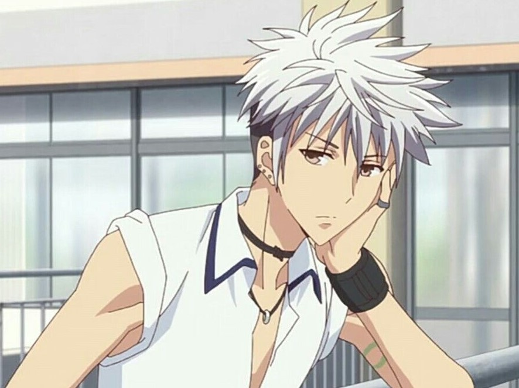
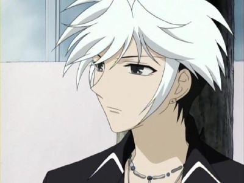
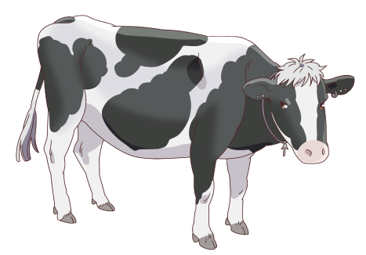

|
Age: 15-17 Hair color: Black and White Eye color: Orange honey color He is the ox in the chinese zodiac, but is the show he shown as a cow. He has two different personalities. His white personality is where he is just normal, quiet and very mellow. He black personality is where he gets angry and more talkitive. Most of the time has his white personality. Certain things trigger the black side of him. He has a bad sense of direction and gets lost easily. He blamed Yuki Sohma for his stupid reputation in the family, because the rat tricked the ox to become first in the zodiac. Then he realized that Yuki was not that rat in the story and Haru has loved Yuki ever since. He is also in love with Rin Sohma (Isuzu Sohma). |
 |
|  | The Ox  |